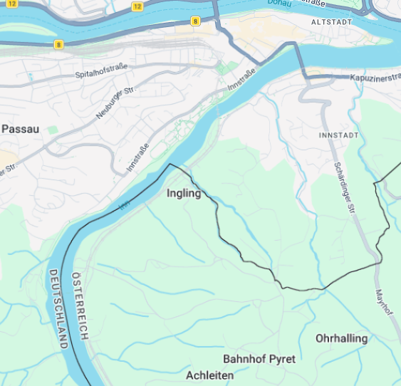

Der Park.
Bei Ingling hinter dem Staudamm kurz außerhalb von Passau gibt es einen Calisthenics Park der recht unbekannt ist. Deswegen habe ich diese Webseite gemacht :).
Trainiere mit Anderen
Tausche dich mit anderen über Trainig aus, tanke Motivation und werd' gemeinsam Stärker!
Kein Equipment?
Kein Problem!
Dir fehlen Ringe, Gummibänder oder ähnliches? Kein Problem! Schaue wann Andere trainieren und teile dir das Equipment.
Zum KalenderKomm Vorbei

Kalender
Tag wählen
Ich bringe mit
Anonym - kein Name, keine E-Mail, keine IP. Gespeichert werden nur Tag, Uhrzeit und Equipment; alle Einträge werden nach dem jeweiligen Tag automatisch gelöscht. Datenschutzerklärung